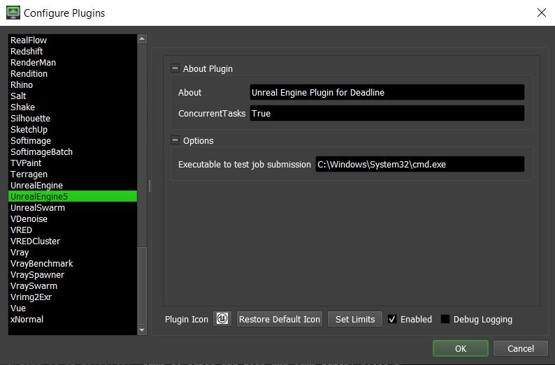

Unreal Engine 5¶
Job Submission¶
The Unreal engine 5 plugin supports job submission from within the Unreal Editor. This guide describes the plugin’s expectations and how to submit jobs.
The following section outlines the available options for the plugin:
Executable: This option specifies the full path to the Editor executable, typically named UnrealEditor-Cmd. The Cmd executable allows attaching and piping the log outputs to the current spawned process. The plugin resolves any Deadline Path Mappings and a custom key
{ProjectRoot}in the executable path.{ProjectRoot}allows users to specify implicit project root locations provided in an environment variable. This option enables a preprocessing step like a source control sync/build system to specify the current project root for the executable. This plugin option is required.- ProjectFile:
This option specifies the full path to the Unreal .uproject file. The .uproject file specifies the project to load when the editor is launched. Similar to the executable option, the plugin resolves any
{ProjectRoot}and Deadline Path Mappings in the .uproject path. This plugin option is required.
- CommandLineArguments:
This option specifies the startup/launch command-line arguments, which determine the automated job/task that the editor is expected to execute. The plugin appends the following arguments to the supplied arguments:
-log: Outputs the editor logs in the current process.-unattended: Disables anything requiring user feedback.
This plugin option is optional.
See also
- CommandLineMode:
This option determines whether a new session of the Editor should be launched for every task or if one editor session should be used for all tasks. The former behaves similarly to a classical command-line process where the Editor’s exit error code determines the success of the task. The latter relies on an internal Editor process to communicate the task success via an RPC protocol. The default option is set to
true. This plugin option is optional.
- StartupDirectory:
This option controls what directory to start the command line in. This plugin option is optional.
These options can be set when defining your DeadlineJobPreset described below.
The following is an example snippet of the plugin options, which launches the editor and executes a custom Python script:
{
"Executable": "{ProjectRoot}/Engine/Binaries/Win64/UnrealEditor-Cmd.exe",
"ProjectFile": "{ProjectRoot}/MyCustomProject/MyCustomProject.uproject",
"CommandLineArguments": '-execcmds="py mycustomscript.py arg0 arg1 --key=value"',
"CommandLineMode": "true"
}
Plugin Configuration¶
You can configure the Deadline Unreal Engine 5 plugin settings from the Monitor. While in power user mode, select Tools -> Configure Plugins and select the Unreal Engine 5 plugin from the list on the left.
Unreal Engine plugin¶
With this Unreal Engine plugin, you can submit Deadline jobs to a Deadline repository. This documentation describes the plugin’s functionality and how to use it to submit any arbitrary Deadline job.
The Deadline plugin provides a custom Unreal Data Asset type that you can use to configure and store part or all of the data required for a Deadline job submission. You can then use this asset to submit a job using a background process called the Deadline Service.
Setup¶
This setup guide demonstrates how to enable and set up the Deadline plugin in your Unreal project.
Note
Unreal Engine 5 setup needs Visual Studio 2022 installed on the machine to build the Deadline submitter plugin project. Follow this documentation from Unreal Engine on Setting Up Visual Studio.
Installing the Unreal Deadline Service and the Movie Pipeline Deadline Unreal plugins¶
Go to your Deadline repository installation, and navigate to <Deadline Repository>\plugins\UnrealEngine5\UnrealEnginePlugins
Copy the UnrealDeadlineService, and the MoviePipelineDeadline directories to the Plugins directory located in your Unreal Project’s directory. If no Plugins directory is there, create one.
Note
The Deadline service has a mode that supports submission to the Deadline web service. This mode can be enabled via the project settings and disabling the Deadline Command check bock and inputting your webservice host URL. The webservice mode depends on the python urllib3 library; this library is not packaged with the plugin by default. If the python interpreter running in the Editor has this library installed, then no further configuration is needed. Otherwise, you will need to download urllib3 via an external source and copy the site packages into the Content/Python/Lib/<Platform>/ directory in the UnrealDeadlineService plugin. (“Platform” on a windows operating system is Win64). The Editor will automatically load any python libraries in the specified path.
Enabling the Deadline Plugins¶
To enable the plugin:
Open the plugin browser in the Unreal Editor by selecting Edit > Plugins from the main menu.
Search for Unreal Deadline Service in the search dialog.
Enable the plugin and restart the Editor.
Repeat for Movie Pipeline Deadline if it is not also enabled.
Create Deadline Data Asset¶
This plugin creates a custom Data Asset type called DeadlineJobPreset, designed to be a collection of job submission data. The Preset is a collection of Deadline job data in the form of key-value pairs. Each key represents the job preset name, and its corresponding value is the job data. The job data consists of a Deadline Job Info File and Deadline Plugin Info.
To create a data asset:
Right-click in the content browser and look for Data Asset. This asset type is usually located under Miscellaneous.
In the Classes search box, type DeadlineJobPreset.


Give your data asset a name representative of its use.
Open the data asset, and confirm the preset settings.

Expand the Job Options Preset section and fill in the necessary details for the Deadline job. See Job Info for the available options and their definition.
Note
To add additional job options in the interface, you can add the key-value pairs of the option to a custom mapping Extra Job Options in the Advanced Job Options Preset.
Expand the Plugin Info Preset section and input the parameters of your Deadline plugin as key-value pairs. See Plugin Info for examples of parameters for this Deadline plugins. It is important to know that the Executable and ProjectFile parameters are required.
Save the Data Asset.
Update Project Settings¶
We need to update the Movie Render Queue project settings to use executors defined by the Movie Pipeline Deadline plugin.
Note
Make sure that the Movie Render Queue plugin is enabled on the project.
To update the project settings for Movie Render Queue:
From the main menu, select Edit > Project Settings to open the project settings browser.
Search for Movie Render Pipeline in the search browser.
In the Default Remote Executor option, search for MoviePipelineDeadlineRemoteExecutor and set the option. This setting determines how a job is submitted when the Render Remote button clicked.
- In the Default Executor Job option, search for MoviePipelineDeadlineExecutorJob and set the option. This setting augments the details panel in the Movie Render Queue UI with our custom Deadline job definition.

Submit Deadline Job¶
To submit a Deadline job:
In Unreal Editor’s main menu bar, click the Deadline menu and select Submit Deadline Job.
Select your data asset from the Job Preset drop-down list.
Click Render (Remote).
Warning
If a job could not be submitted, make sure to check the output logs for details. Logs will be viewable in the ‘Output Log’ panel accessable from the bottom bar of the Unreal Editor.

FAQ¶
Which versions of Unreal Engine are supported by Deadline Unreal Engine 5 plugin?
Unreal Engine versions greater than or equal to 5.0 are supported. Unreal engine versions less than 5.2 may need to be built from source to be compatable with the Unreal Deadline Service and the Movie Pipeline Deadline Unreal plugins.
Error Messages And Meanings¶
This is a collection of known Unreal Engine 5 error messages and their meanings, as well as possible solutions. We want to keep this list as up to date as possible, so if you run into an error message that isn’t listed here, please visit the Thinkbox Help Centre and let us know.
Currently, no error messages have been reported for this plugin.

{kind=link}